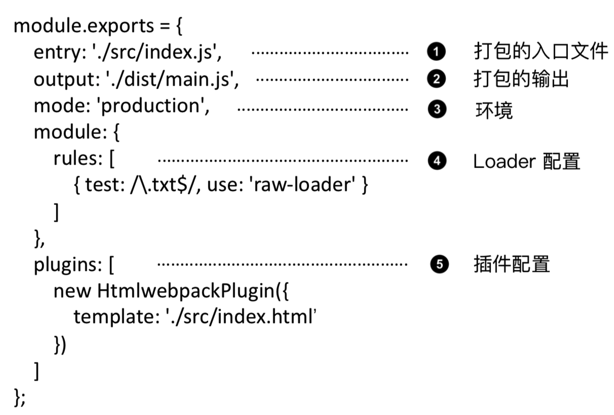

Vue快速学习笔记(8)webpack4.X配置Vue开发打包环境
作者:J.sky 发布时间:2020-03-05 15:16:08 Tag: webpack
webpack 简介
webpack是前端的一个项目构建工具，它是基于Node.js 开发出来的一个前端工具.
webpack可以完美实现资源的合并、打包、压缩、混淆等诸多功能。
npm修改下载源
- 先安装
node.js，这个大家百度一下，介绍的太多了，这里不敷衍了。安装了node.js后就集成了npm *npm如果不修改下载源，下载会很慢的，所以推荐修改为淘宝的源。修改方式推荐使用nrm。
安装：
npm install -g nrm //全局安装
nrm ls列出所有源，nrm use taobao 切换淘宝源，至此我们可以无忧的下载了。
另外，也有可能出现在没有切换源的时候，连nrm都下载不下来的时候，比如我。
那么我们先临时切换npm的下载源：
npm config set registry https://registry.npm.taobao.org
测试是否改变了源。
npm config get registry
安装及初始化webpack
mkdir webpack-demo && cd webpack-demo
npm init -y
npm install webpack webpack-cli --save-dev
一些npm的安装命令
npm i module_name # 安装模块到项目目录下 npm i module_name -g # -g 的意思是将模块安装到全局，具体安装到磁盘哪个位置，要看 npm config prefix 的位置。 npm i module_name -S(-save) # --save 的意思是将模块安装到项目目录下，并在package文件的dependencies节点写入依赖。 npm i module_name -D(--save-dev) # --save-dev 的意思是将模块安装到项目目录下，并在package文件的devDependencies节点写入依赖。
初始化webpack
mkdir webpack-demo && cd webpack-demo
npm init -y
npm install webpack webpack-cli --save-dev
通过上边的终端魔法，我们成功的初始化了一个前端项目。
我们现在的目的是配置webpack成为一个模块化的Vue前端开发项目，来看看我们需要做哪些事情。
webpack打包这里总结为：
- 配置文件
config.js用来管理配置：开发环境，loader模块，插件，打包等。 package.json,管理各种包依赖插件，还有添加脚本命令。- 添加并配置各种loader，使webpack能有处理更多文件的能力。
- 添加并配置各种插件，可以处理生产打包中的一些额外功能。
webpack的配置文件
关于webpack的配置文件修改，我推荐安装webpack-merge实现配置文件合并.
假设：
webpack.common.js 公共部分文件 webpack.dev.js 开发环境 webpack.prod.js 生产环境
const merge = require('webpack-merge');//导入包
const common = require('./webpack.common');//导入公共配置文件
。。。。。。config
module.exports=merge(common,devConfig);//合并配置文件
使用起来很方便，这样就可以方便的配置多种开发调试及生产环境。
配置文件的结构目前来说分为四大部分：
- 入口entry
- 出口output
- 模块module
- 插件plugins
配置文件结构展示图：

如果详细讲解webpack的各种配置讲个几天几夜也是说不完的，还是看代码研究吧。 配置的重点在于模块和插件的选项，这我就不贴代码了，如果你有兴趣可以clone仓库里的代码研究一下。 本仓库集成了最基础的模块和插件，包括处理：js es6 css less sass 图片 Vue vue-router，配置文件设置了公共文件，打包在此基础上做了开发和生产两种打包模式。
基于webpack4.X创建的Vue开发环境基础搭建的项目，地址如下：
仓库源码下载：
一些其他注意事项
由于现在新版本的 clean-webpack-plugin 插件引入已经改为: const { CleanWebpackPlugin } = require('clean-webpack-plugin'); new CleanWebpackPlugin(),//清理目录 而且不用加入目录数组['dist']
使用 webpack-dev-server
npm install --save-dev webpack-dev-server
如果报错 npm ERR! Failed at the webpack-demo@1.0.0 start script. npm ERR! This is probably not a problem with npm. There is likely additional logging output above.
使用babel处理高级JS语法
npm i -D babel-core@6.26.3 babel-loader@7.1.4 babel-preset-env@1.6.1
- 在
webpack.config.js中添加相关loader模块，其中需要注意的是，一定要把node_modules文件夹添加到排除项：{ test: /\.js$/, use: 'babel-loader', exclude: /node_modules/ } - 在项目根目录中添加
.babelrc文件，并修改这个配置文件如下：{ "presets": ["env"] } - 注意：语法插件
babel-preset-es2015可以更新为babel-preset-env，它包含了所有的ES相关的语法；